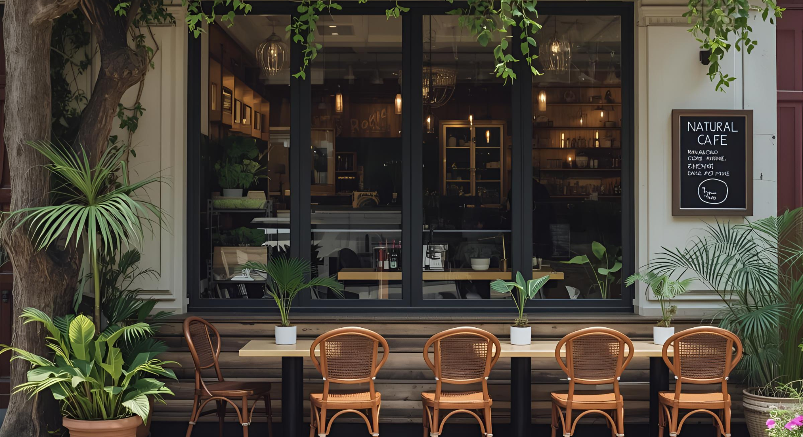
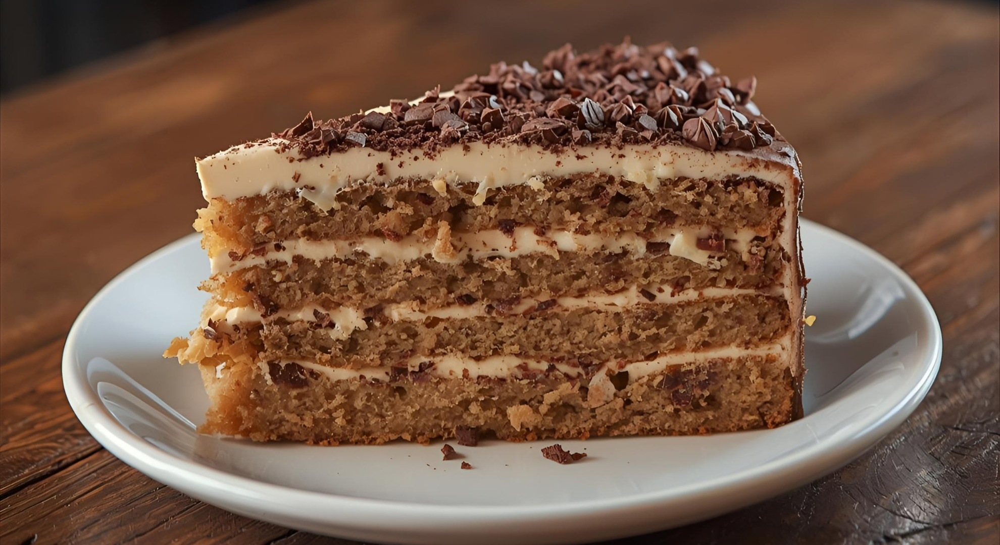
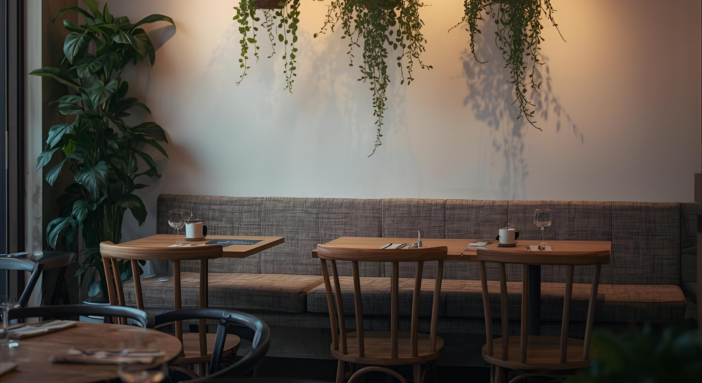
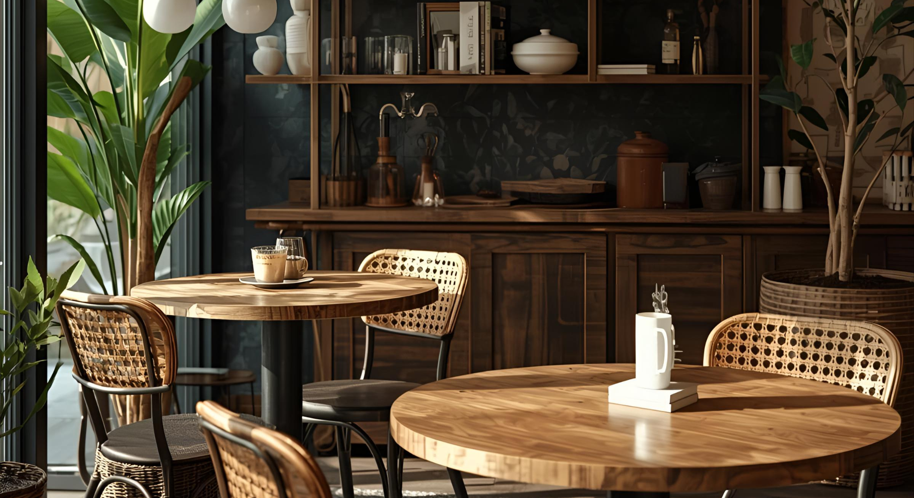
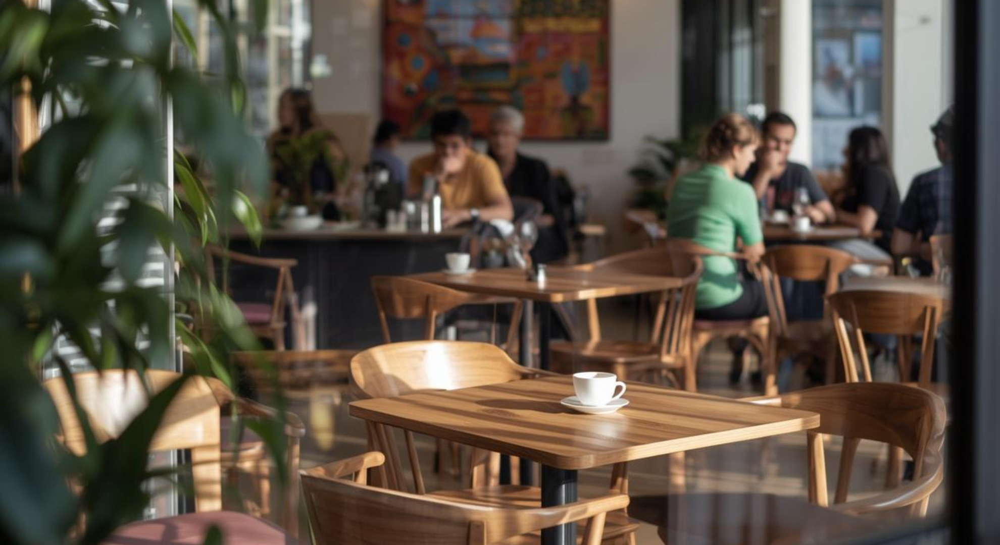

about
サイト紹介
日常に溶け込む、自然で落ち着いたカフェをイメージしたポートフォリオサイトです。
サイトに訪れた人がリラックスしながら閲覧できるシンプルで見やすい構成を意識しました。
コンセプト
ドリンクだけではなくフードも楽しみたい20,30代男女を対象に「リラックスできる、自然で落ち着いたカフェ」をコンセプトに制作しました。
派手さよりもシンプルで長時間見ていても疲れないデザインを意識しています。
デザイン
暖かみのある配色と余白を意識したレイアウトで落ち着いた雰囲気を意識して制作しました。
また背景画像にボタニカルを使用して自然な雰囲気を伝えました。
こだわり
ユーザーがストレスなく使用できるように気になったフードやドリンクがあったらワンクリックで値段や詳細を確認できるクリックアニメーションを実装しました。
ワンクリックでメニューを確認できるのでUI/UXにも使いやすさを重視しています。
interior

少し暗めの照明と柔らかいソファーで
くつろげる空間を演出しました。

窓際の席は日当たりがよく
外の景色を眺めることができます。

4人がけ以上の席もあるので
大人数でのお食事も可能です。
木の温もりとやわらかな光に囲まれた空間で
ゆったりとした時間をお楽しみいただけます。
menu